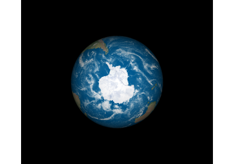
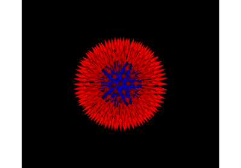
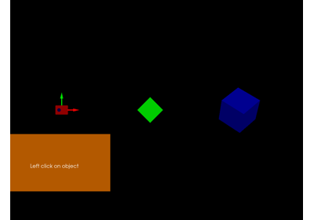

Tutorials¶
How to use widgets, ui, actor and windows module. Below some tutorials to go in details
Introductory¶
These tutorials show:
How to combine a timer with an actor
How to slice data with the slicer actor
How to use the normals of your data.



Shaders¶
These tutorials show:
How to use shaders in FURY actors.
How to create new user shaders and internal conventions.